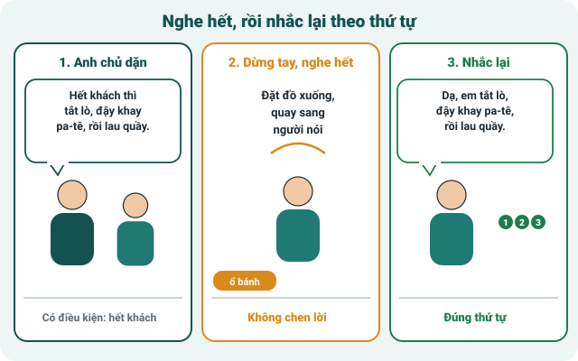

K1 · Lắng nghe và hiểu đúng › Bậc 1 Làm quen
Nghe hết chỉ dẫn, nhắc lại và làm đúng từng bước
Đây là bài Bậc 1 (Làm quen), dành cho người lần đầu đi làm thêm hoặc thực tập. Học xong, hãy học tiếp bài Bậc 2: Nhận chỉ dẫn và xác nhận lại trước khi làm.
1. Mục tiêu
- Nghe hết một chỉ dẫn ngắn mà không ngắt lời, rồi nhắc lại bằng lời của mình.
- Làm đúng một chỉ dẫn 3 bước theo đúng thứ tự.
2. Khởi động truy xuất
Đây là bài đầu của chuỗi bài bổ sung. Hãy nhớ lại trải nghiệm của bạn và trả lời trong đầu.
- Lần gần nhất bạn làm sai một việc được dặn, bạn quên phần nào?
- Khi đó, bạn đang làm gì trong lúc người kia nói?
3. Giải thích
Ngày đầu đi làm, bạn nhận rất nhiều chỉ dẫn ngắn. "Lau bàn số 3, thay khăn, rồi báo chị." Nghe thì dễ. Nhưng người mới hay quên một bước, hoặc làm sai thứ tự.
Lý do thường gặp: bạn nghe nửa chừng rồi bắt đầu nghĩ việc khác. Hoặc bạn trả lời "dạ" trước khi người kia nói xong.
Ba thói quen của người nghe tốt ở nơi làm việc:
1. Dừng tay, nhìn người nói 2. Nghe đến hết câu 3. Nhắc lại theo thứ tự
1. Dừng tay, nhìn người nói. Nếu đang bưng đồ hay cầm điện thoại, đặt xuống vài giây. Bạn không thể vừa đếm tiền vừa nhớ ba bước.
2. Nghe đến hết câu. Không ngắt lời, không nói "em biết rồi". Bước quan trọng nhất đôi khi nằm ở cuối câu.
3. Nhắc lại theo thứ tự. Nói lại bằng lời của bạn, đếm bằng ngón tay nếu cần. "Dạ, em lau bàn 3, thay khăn mới, xong thì báo chị."
Vì sao nhắc lại bằng lời của mình? Khi tự diễn đạt, bạn buộc phải hiểu, không chỉ nhớ âm thanh. Người giao việc cũng nghe được chỗ bạn hiểu sai và sửa ngay.
Khi làm, giữ đúng thứ tự. Nhiều việc có thứ tự vì lý do an toàn hay vệ sinh. Ví dụ: rút điện trước khi lau máy. Nếu thấy thứ tự lạ, hỏi lý do thay vì tự đổi.
Ba trường hợp khi nhận chỉ dẫn
- Từ 3 bước trở xuốngNghe hết, nhắc lại theo thứ tự, rồi làm.
- Dài hơn 3 bướcGhi ngay vào sổ tay hoặc điện thoại, rồi nhắc lại.
- Thứ tự thấy lạVẫn làm đúng thứ tự, và hỏi lý do khi có dịp.
Cách ghi việc có ở bài Ghi việc và báo sớm.
Nghe tốt không phải là năng khiếu. Đó là thói quen bạn tập được trong vài tuần.
4. Ví dụ tại nơi làm việc Việt Nam
Tình huống giả định. Minh, 17 tuổi, làm thêm cuối tuần ở một tiệm bánh mì. Anh chủ dặn khi Minh đang xếp ổ bánh.
Anh chủ: "Minh, lát hết khách thì tắt lò nướng, đậy hết khay pa-tê, rồi mới lau quầy nhé."
Minh làm như sau:
- Đặt ổ bánh xuống, quay sang nghe.
- Chờ anh nói hết, không chen vào.
- Nhắc lại: "Dạ, hết khách thì em tắt lò, đậy khay pa-tê, rồi lau quầy."
Anh chủ gật đầu. Cuối ca, Minh làm đúng thứ tự ba bước đó.

Vì sao cách này tốt: Minh nhắc lại cả điều kiện "hết khách". Đậy khay trước khi lau quầy giúp nước lau không bắn vào thức ăn.
5. Thực hành
Tình huống giả định. Bạn làm thêm ở một cửa hàng tiện lợi. Chị trưởng ca nói: "Em kiểm hạn sữa chua ở tủ mát, hàng nào còn dưới 2 ngày thì để riêng vào rổ, rồi ghi số lượng vào sổ."
Viết câu nhắc lại của bạn, theo đúng thứ tự.
Gợi ý 1
Có 3 việc: kiểm, để riêng, ghi sổ. Có một điều kiện: dưới 2 ngày.
Gợi ý 2
Bắt đầu bằng "Dạ, em…" rồi đọc lần lượt từng bước.
Lời giải mẫu
"Dạ, em kiểm hạn sữa chua ở tủ mát. Hộp nào còn dưới 2 ngày em để riêng vào rổ. Xong em ghi số lượng vào sổ ạ."
6. Tự kiểm tra
Chọn đáp án. Mỗi lựa chọn đều có giải thích.
Câu 1. Quản lý đang dặn việc thì bạn nghĩ mình đã hiểu. Bạn nên làm gì?
-
Chưa đúng. Bước quan trọng có thể nằm ở cuối câu. Ngắt lời dễ làm bạn bỏ sót.
-
Đúng. Đúng. Nghe hết rồi nhắc lại giúp cả hai bên kiểm tra là đã hiểu giống nhau.
-
Chưa đúng. Bạn chưa nghe hết nên dễ làm thiếu hoặc sai thứ tự.
Câu 2. Vì sao nên nhắc lại chỉ dẫn bằng lời của mình?
-
Chưa đúng. Mục đích không phải là nói hay mà là kiểm tra mình hiểu đúng.
-
Đúng. Đúng. Diễn đạt lại buộc bạn hiểu, và giúp người giao sửa ngay chỗ lệch.
-
Chưa đúng. Nhắc nguyên văn không sai, nhưng chưa cho thấy bạn đã hiểu.
Câu 3. Bạn được dặn: rút điện máy xay rồi mới tháo cối ra rửa. Bạn thấy tháo cối trước thì nhanh hơn. Bạn làm gì?
-
Chưa đúng. Thứ tự này có thể vì lý do an toàn. Không nên tự đổi.
-
Đúng. Đúng. Giữ thứ tự, rồi hỏi để hiểu. Rút điện trước giúp tránh tai nạn.
-
Chưa đúng. Bỏ việc giữa chừng không giải quyết được gì. Hãy hỏi lý do.
Câu 4. Chỉ dẫn có 6 bước. Cách nào giúp bạn không quên?
-
Chưa đúng. Nhớ 6 bước trong đầu rất dễ quên, nhất là khi đang bận.
-
Đúng. Đúng. Chỉ dẫn dài hơn 3 bước nên ghi lại ngay.
-
Chưa đúng. Hỏi lại nhiều lần làm mất thời gian của cả hai. Ghi lại ngay từ đầu.
7. Phản tư
- Trong lúc người khác dặn việc, điều gì hay làm bạn mất tập trung nhất?
- Bạn sẽ làm gì khác vào lần tới để nghe hết câu?
8. Áp dụng thật
Trong 7 ngày tới, mỗi khi nhận một chỉ dẫn ngắn, hãy nhắc lại theo thứ tự trước khi làm. Đếm xem bạn làm được bao nhiêu lần. Ghi lại một lần nhắc lại giúp bạn phát hiện mình hiểu sai.
9. Siêu dữ liệu
| skill | K1 · Lắng nghe và hiểu đúng |
|---|---|
| level | Bậc 1 · Làm quen |
| group | N2 |
| framework_map | WEF: Empathy and active listening; CSfW: 2a Communicate for work; LifeComp: S1 Empathy; S2 Communication (chỉ dẫn chiếu) |
| updated | 2026-11-14 |
Hoàn thành bài
Đánh dấu đã học để site gợi ý lịch ôn sau 1, 3 và 7 ngày. Dữ liệu chỉ lưu trên máy của bạn.
Lịch ôn gợi ý: